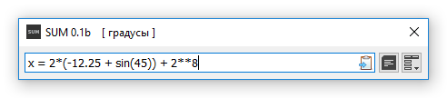
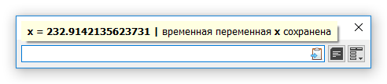

Константы и переменные могут быть постоянными - через сессии, временными - в рамках текущей сессии, и встроенными - недоступные для редактирования и удаления.
Постоянные константы и переменные следует добавлять через диалог Константы и Переменные. Таким образом, они появляются в списке уже отмеченными.
Временные переменные, напротив, следует назначать через Поле Вычислений (смотр. «Назначение переменной» ниже)ю Таким образом, они появляются в списке неотмеченными.
В любом случае, оба типа могут быть переведены в другой, с помощью отметки. Обратите внимание, что временные переменные должны быть отмечены в рамках текущей сессии, так как все неотмеченные поля удаляются при выходы программы.
Временные переменные очень удобные. Они могут быть назначены прямо в Поле Вычислений и удалены при выходе из программы, так как добавляются в список всегда неотмеченными.
В отличие от констант и переменных добавленных через соответствующий диалог, к переменной могут быть назначены не только числовые значения, но и любые выражения. Разница в том, что если добавить имя переменной со знаком равенства перед выражением, то вместо вычисления произойдет назначение. А вместо выражения с результатом, в Историю добавится назначение.
Этим же способом временные переменные могут быть обновлены. Соответствующее сообщение будет показано

Назначение составлено.

Назначение завершено.
Так или иначе, временные переменные могут быть переведены в постоянные, если отметить их в диалоге Константы и Переменные перед тем как выйти из программы.